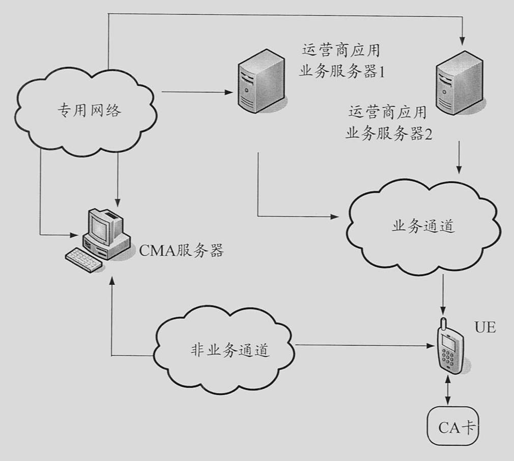

发明名称--一种基于条件接收卡实现多应用业务的方法、系统及装置
| 申请号 | CN200810226832.X | 申请日 | 2008.11.17 | ||
| 公开（公告）号 | CN101409592A | 公开（公告）日 | 2009.04.15 | ||
| IPC分类号 | H04H60/23; H04N7/16; H04L29/06 | 申请（专利权）人 | 普天信息技术研究院有限公司; | ||
| 发明人 | 张旭;窦永金;王昕;曹会扬;王晨阳;姜涌; | 优先权号 |
摘要:
本发明公开了一种基于条件接收卡实现多应用业务的方法、系统及装置，CMA服务器与CA卡完成双向注册认证后，将预先存储的运营商应用业务服务器应用业务列表信息发送至UE，用户选择自身需要的运营商应用业务服务器应用业务列表，然后，运营商应用业务服务器将用户选择的运营商应用业务程序安装密钥和授权密钥信息通过CMA服务器发送至UE，将用户选择的运营商应用业务程序加密后发送至相应的UE，UE接收并发送至CA卡，CA卡根据接收的授权密钥对加密的应用业务程序解密，安装解密的应用业务程序。通过将不同运营商提供的应用业务集中在CA卡上，实现了CA卡支持多运营商的应用业务的目的，满足了用户多样化业务和高质量服务的需求。
摘要附图:
